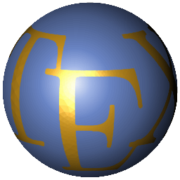

List of Publications
- Equivariant free boundary minimal discs and annuli in ellipsoids.
preprint. - Disc stackings and their Morse index. (with A. Carlotto and D. Wiygul)
preprint. - Topological control for min-max free boundary minimal surfaces. (with G. Franz)
preprint. - Spectral estimates for free boundary minimal surfaces via Montiel–Ros partitioning methods. (with A. Carlotto and D. Wiygul)
preprint. - Noncompact self-shrinkers for mean curvature flow with arbitrary genus. (with R. Buzano and H. Nguyen)
preprint. - Infinitely many pairs of free boundary minimal surfaces with the same topology and symmetry group. (with A. Carlotto and D. Wiygul)
Memoirs of the AMS (to appear). - Minimal hypertori in the four-dimensional sphere. (with A. Carlotto)
Ars Inveniendi Analytica (2023). - Free boundary minimal surfaces with connected boundary and arbitrary genus. (with A. Carlotto and G. Franz)
Cambridge Journal of Mathematics 10-4 (2022). - Incomplete Yamabe flows and removable singularities.
Journal of Functional Analysis 278 (2020). - Unconditional existence of conformally hyperbolic Yamabe flows.
Analysis & PDE 13-5 (2020). - Yamabe flow on non-compact manifolds with unbounded initial curvature.
The Journal of Geometric Analysis 30 (2020). - Instantaneously complete Yamabe flow on hyperbolic space.
Calculus of Variations and PDE 58, 190 (2019). - Yamabe flow on noncompact manifolds.
Doctoral Thesis (2019).
